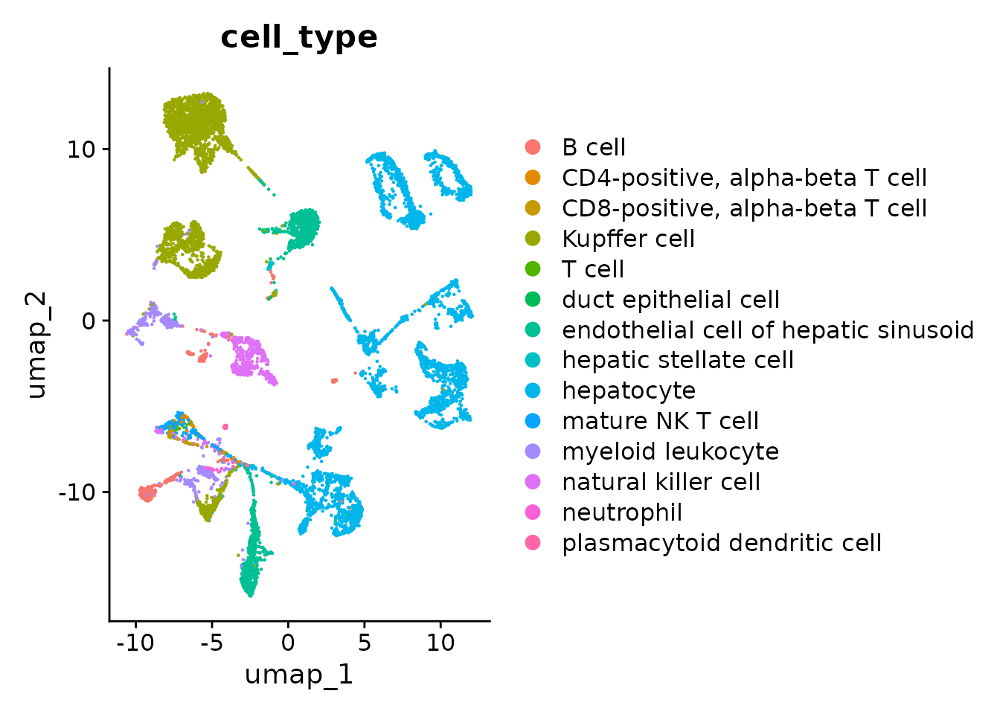
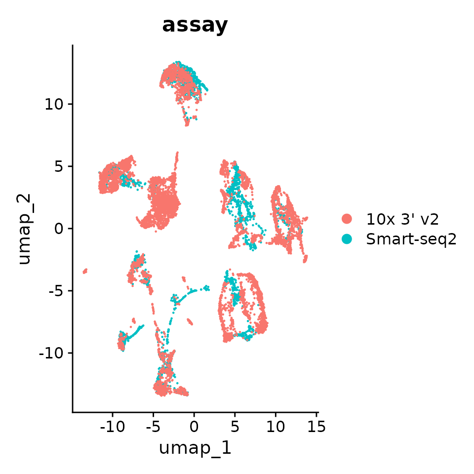
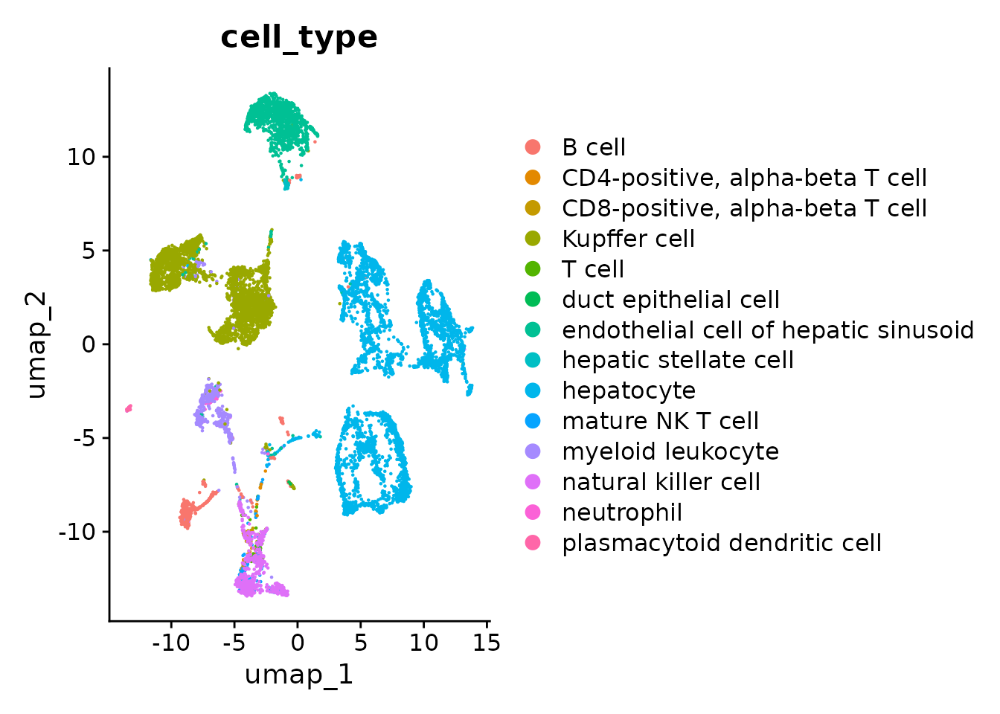
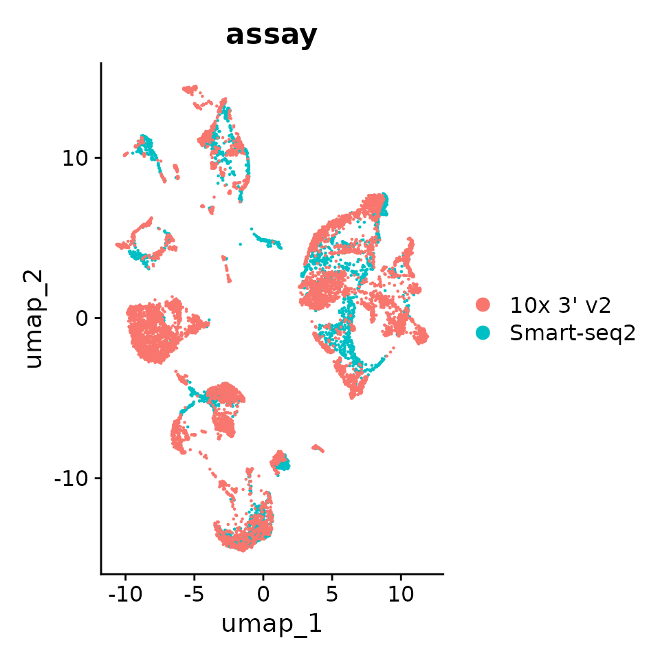
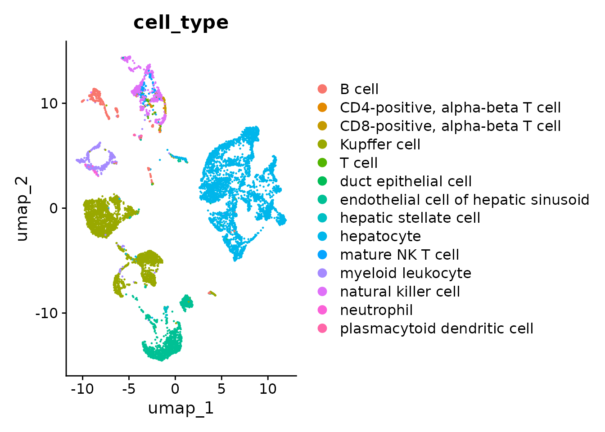

Integrating multi-dataset slices of data with Seurat
Source:vignettes/comp_bio_data_integration.Rmd
comp_bio_data_integration.RmdThe Census contains data from multiple studies providing an opportunity to perform inter-dataset analysis. To this end integration of data has to be performed first to account for batch effects.
This notebook provides a demonstration for integrating two Census datasets using Seurat. The goal is not to provide an exhaustive guide on proper integration, but to showcase what information in the Census can inform data integration.
Contents
- Finding and fetching data from mouse liver (10X Genomics and Smart-Seq2).
- Gene-length normalization of Smart-Seq2 data.
- Integration with
Seurat.- Inspecting data prior to integration.
- Integration across datasets using
dataset_id. - Integration across datasets using
dataset_idand controlling for batch usingdonor_id. - Integration across datasets using
dataset_idand controlling for batch usingdonor_id+assay_ontology_term_id+suspension_type. .
Finding and fetching data from mouse liver (10X Genomics and Smart-Seq2)
Let’s load all packages needed for this notebook.
Now we can open the Census.
census <- open_soma()In this notebook we will use Tabula Muris Senis data from the liver as it contains cells from both 10X Genomics and Smart-Seq2 technologies.
Let’s query the datasets table of the Census by filtering on collection_name for “Tabula Muris Senis” and dataset_title for “liver”.
census_datasets <- census$get("census_info")$get("datasets")
census_datasets <- census_datasets$read(value_filter = "collection_name == 'Tabula Muris Senis'")
census_datasets <- as.data.frame(census_datasets$concat())
# Print rows with liver data
census_datasets[grep("Liver", census_datasets$dataset_title), ]
#> soma_joinid collection_id collection_name
#> 15 583 0b9d8a04-bb9d-44da-aa27-705bb65b54eb Tabula Muris Senis
#> 36 605 0b9d8a04-bb9d-44da-aa27-705bb65b54eb Tabula Muris Senis
#> collection_doi dataset_id
#> 15 10.1038/s41586-020-2496-1 4546e757-34d0-4d17-be06-538318925fcd
#> 36 10.1038/s41586-020-2496-1 6202a243-b713-4e12-9ced-c387f8483dea
#> dataset_version_id
#> 15 0a851e26-a629-4e59-9b52-9b4d1ce4440b
#> 36 70f4f091-86a9-44e3-a92a-54cee98cc223
#> dataset_title
#> 15 Liver - A single-cell transcriptomic atlas characterizes ageing tissues in the mouse - Smart-seq2
#> 36 Liver - A single-cell transcriptomic atlas characterizes ageing tissues in the mouse - 10x
#> dataset_h5ad_path dataset_total_cell_count
#> 15 4546e757-34d0-4d17-be06-538318925fcd.h5ad 2859
#> 36 6202a243-b713-4e12-9ced-c387f8483dea.h5ad 7294Now we can use the values from dataset_id to query and load a Seurat object with all the cells from those datasets.
tabula_muris_liver_ids <- c("4546e757-34d0-4d17-be06-538318925fcd", "6202a243-b713-4e12-9ced-c387f8483dea")
seurat_obj <- get_seurat(
census,
organism = "Mus musculus",
obs_value_filter = "dataset_id %in% tabula_muris_liver_ids"
)We can check the cell counts for both 10X Genomics and Smart-Seq2 data by looking at assay in the metadata.
table(seurat_obj$assay)
#>
#> 10x 3' v2 Smart-seq2
#> 7294 2859Gene-length normalization of Smart-Seq2 data.
Smart-seq2 read counts have to be normalized by gene length.
Lets first get the gene lengths from var.feature_length.
smart_seq_gene_lengths <- seurat_obj$RNA[[]]$feature_lengthNow we can use those to normalize Smart-seq data. So let’s split the object by assay.
seurat_obj.list <- SplitObject(seurat_obj, split.by = "assay")An normalize the Smart-seq slice using the gene lengths and merge them back into a single object.
seurat_obj.list[["Smart-seq2"]][["RNA"]]@counts <- seurat_obj.list[["Smart-seq2"]][["RNA"]]@counts / smart_seq_gene_lengths
seurat_obj <- merge(seurat_obj.list[[1]], seurat_obj.list[[2]])Integration with Seurat
Here we will use the native integration capabilities of Seurat.
For comprehensive usage and best practices of Seurat intergation please refer to the doc site of Seurat.
Inspecting data prior to integration
Let’s take a look at the strength of batch effects in our data. For that we will perform embedding visualization via UMAP.
Let’s do basic data normalization and variable gene selection
seurat_obj <- SCTransform(seurat_obj)
seurat_obj <- FindVariableFeatures(seurat_obj, selection.method = "vst", nfeatures = 2000)And now perform PCA and UMAP
seurat_obj <- RunPCA(seurat_obj, features = VariableFeatures(object = seurat_obj))
seurat_obj <- RunUMAP(seurat_obj, dims = 1:30)
# By assay
p1 <- DimPlot(seurat_obj, reduction = "umap", group.by = "assay")
p1
# By cell type
p2 <- DimPlot(seurat_obj, reduction = "umap", group.by = "cell_type")
p2
You can see that batch effects are strong as cells cluster primarily by assay and then by cell_type. Properly integrated embedding would in principle cluster primarily by cell_type, assay should at best randomly distributed.
Data integration with Seurat
Whenever you query and fetch Census data from multiple datasets then integration needs to be performed as evidenced by the batch effects we observed.
The paramaters for Seurat used in this notebook were selected to the model run quickly. For best practices on integration of single-cell data using Seurat please refer to their documentation page.
seurat_d reading the article An integrated cell atlas of the human lung in health and disease by Sikkema et al. whom perfomed integration of 43 datasets from Lung.
Here we focus on the metadata from the Census that can be as batch information for integration.
Integration across datasets using dataset_id
All cells in the Census are annotated with the dataset they come from in "dataset_id". This is a great place to start for integration.
So let’s run a Seurat integration pipeline. First we define our model with batch set as dataset_id.
Firs normalize and select variable genes seperated by our batch key dataset_id
# split the dataset into a list of two seurat objects for each dataset
seurat_obj.list <- SplitObject(seurat_obj, split.by = "dataset_id")
# normalize each dataset independently
seurat_obj.list <- lapply(X = seurat_obj.list, FUN = function(x) {
x <- SCTransform(x)
})
# select features for integration
features <- SelectIntegrationFeatures(object.list = seurat_obj.list)Now we perform integration.
seurat_obj.list <- PrepSCTIntegration(seurat_obj.list, anchor.features = features)
seurat_obj.anchors <- FindIntegrationAnchors(object.list = seurat_obj.list, anchor.features = features, normalization.method = "SCT")
seurat_obj.combined <- IntegrateData(anchorset = seurat_obj.anchors, normalization.method = "SCT")Let’s inspect the results by doing normalization and then UMAP visulization.
DefaultAssay(seurat_obj.combined) <- "integrated"
# Run the standard workflow for visualization and clustering
seurat_obj.combined <- ScaleData(seurat_obj.combined, verbose = FALSE)
seurat_obj.combined <- RunPCA(seurat_obj.combined, npcs = 30, verbose = FALSE)
seurat_obj.combined <- RunUMAP(seurat_obj.combined, reduction = "pca", dims = 1:30)And plot the UMAP.
# By assay
p1 <- DimPlot(seurat_obj.combined, reduction = "umap", group.by = "assay")
p1
# By cell type
p2 <- DimPlot(seurat_obj.combined, reduction = "umap", group.by = "cell_type")
p2
Great! You can see that the clustering is no longer mainly driven by assay, albeit still contributing to it.
Great! You can see that the clustering is no longer mainly driven by assay, albeit still contributing to it.
Integration across datasets using dataset_id and controlling for batch using donor_id
Similar to dataset_id, all cells in Census are annotated with donor_id. The definition of donor_id depends on the dataset and it is left to the discretion of data curators. However it is still rich in information and can be used as a batch variable during integration.
Because donor_id is not guaranteed to be unique across all cells of the Census, we strongly recommend concatenating dataset_id and donor_id and use that as the batch separator for Seurat
# split the dataset into a list of two seurat objects for each dataset
seurat_obj.list <- SplitObject(seurat_obj, split.by = "dataset_id")
# normalize each dataset independently controlling for batch
seurat_obj.list <- lapply(X = seurat_obj.list, FUN = function(x) {
x <- SCTransform(x, vars.to.regress = "donor_id")
})
# select features for integration
features <- SelectIntegrationFeatures(object.list = seurat_obj.list)Now we perform integration.
seurat_obj.list <- PrepSCTIntegration(seurat_obj.list, anchor.features = features)
seurat_obj.anchors <- FindIntegrationAnchors(object.list = seurat_obj.list, anchor.features = features, normalization.method = "SCT")
#> Finding all pairwise anchors
#> Running CCA
#> Merging objects
#> Finding neighborhoods
#> Finding anchors
#> Found 7161 anchors
#> Filtering anchors
#> Retained 4990 anchors
seurat_obj.combined <- IntegrateData(anchorset = seurat_obj.anchors, normalization.method = "SCT")
#> [1] 1
#> Warning: Different cells and/or features from existing assay SCT
#> [1] 2
#> Warning: Different cells and/or features from existing assay SCT
#> Merging dataset 1 into 2
#> Extracting anchors for merged samples
#> Finding integration vectors
#> Finding integration vector weights
#> Integrating data
#> Warning: Assay integrated changing from Assay to SCTAssay
#> Warning: Different cells and/or features from existing assay SCTAnd inspect the new results by UMAP.
DefaultAssay(seurat_obj.combined) <- "integrated"
# Run the standard workflow for visualization and clustering
seurat_obj.combined <- RunPCA(seurat_obj.combined, npcs = 30, verbose = FALSE)
seurat_obj.combined <- RunUMAP(seurat_obj.combined, reduction = "pca", dims = 1:30)
#> 14:49:10 UMAP embedding parameters a = 0.9922 b = 1.112
#> 14:49:10 Read 10153 rows and found 30 numeric columns
#> 14:49:10 Using Annoy for neighbor search, n_neighbors = 30
#> 14:49:10 Building Annoy index with metric = cosine, n_trees = 50
#> 0% 10 20 30 40 50 60 70 80 90 100%
#> [----|----|----|----|----|----|----|----|----|----|
#> **************************************************|
#> 14:49:12 Writing NN index file to temp file /tmp/RtmpRa88jI/file926122f23120
#> 14:49:12 Searching Annoy index using 1 thread, search_k = 3000
#> 14:49:16 Annoy recall = 100%
#> 14:49:16 Commencing smooth kNN distance calibration using 1 thread with target n_neighbors = 30
#> 14:49:17 Initializing from normalized Laplacian + noise (using RSpectra)
#> 14:49:17 Commencing optimization for 200 epochs, with 409958 positive edges
#> 14:49:21 Optimization finishedPlot the UMAP.
# By assay
p1 <- DimPlot(seurat_obj.combined, reduction = "umap", group.by = "assay")
p1
# By cell type
p2 <- DimPlot(seurat_obj.combined, reduction = "umap", group.by = "cell_type")
p2
As you can see using dataset_id and donor_id as batch the cells now mostly cluster by cell type.
Integration across datasets using dataset_id and controlling for batch using donor_id + assay_ontology_term_id + suspension_type.
In some cases one dataset may contain multiple assay types and/or multiple suspension types (cell vs nucleus), and for those it is important to consider these metadata as batches.
Therefore, the most comprehensive definition of batch in the Census can be accomplished by combining the cell metadata of dataset_id, donor_id, assay_ontology_term_id and suspension_type, the latter will encode the EFO ids for assay types.
In our example, the two datasets that we used only contain cells from one assay each, and one suspension type for all of them. Thus it would not make a difference to include these metadata as part of batch.
This how the implementation would look line
# EXAMPLE, DON'T RUN.
# split the dataset into a list of seurat objects for each dataset
seurat_obj.list <- SplitObject(seurat_obj, split.by = "dataset_id")
# normalize each dataset independently controlling for batch
seurat_obj.list <- lapply(X = seurat_obj.list, FUN = function(x) {
x <- SCTransform(x, vars.to.regress = c("donor_id", "assay_ontology_term_id", "suspension_type"))
})
# select features for integration
features <- SelectIntegrationFeatures(object.list = seurat_obj.list)
# integrate
seurat_obj.list <- PrepSCTIntegration(seurat_obj.list, anchor.features = features)
seurat_obj.anchors <- FindIntegrationAnchors(object.list = seurat_obj.list, anchor.features = features, normalization.method = "SCT")
seurat_obj.combined <- IntegrateData(anchorset = seurat_obj.anchors, normalization.method = "SCT")